Generative
Procedural generation, algorithmic design, graphics programming, creative imaging ..
-
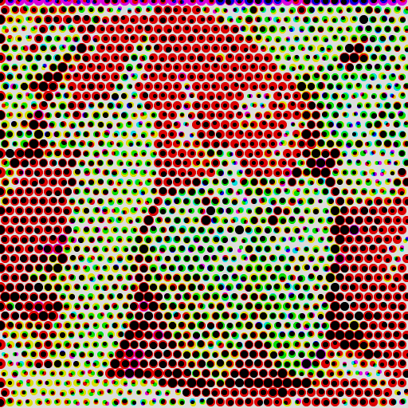
Pseudo-Halftone
Image effect algorithm that mimics the appearance of the halftone technique.
view notebook -
Circle scatter diagram
Image effect algorithm that scatters raster circles (with anti-aliasing).
view notebook -
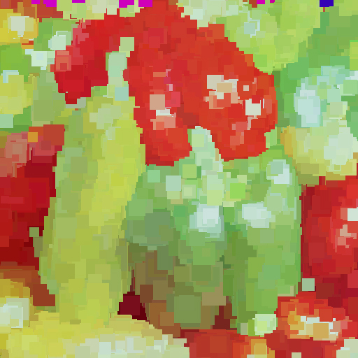
Square scatter diagram
Image effect algorithm that scatters raster squares.
view notebook -
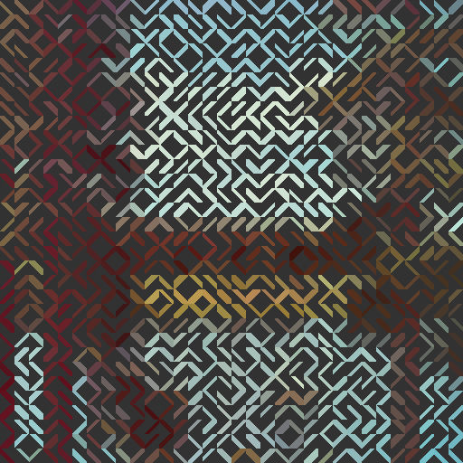
Segments
Image effect algorithm that simulates small filaments inspired by old watch LCDs.
view notebook -
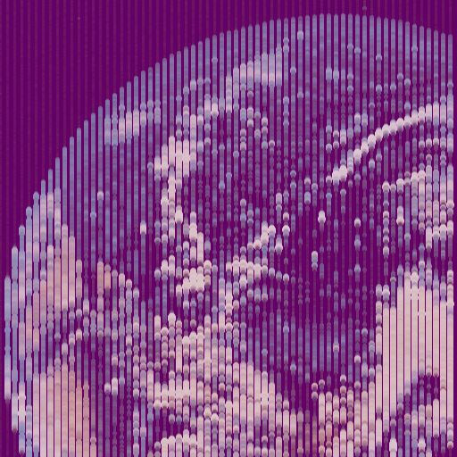
Strings
Image effect algorithm that traces lines with radius variation.
view notebook -
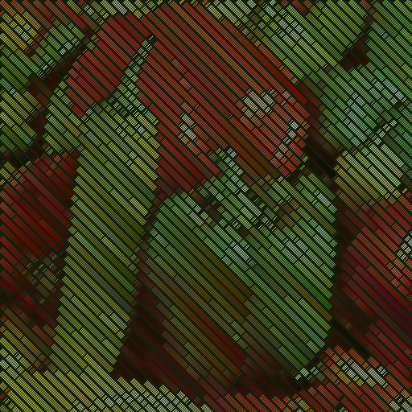
Diagonal Tracing
Image effect algorithm that produces stylized diagonal stripes with color conditionals.
view notebook -
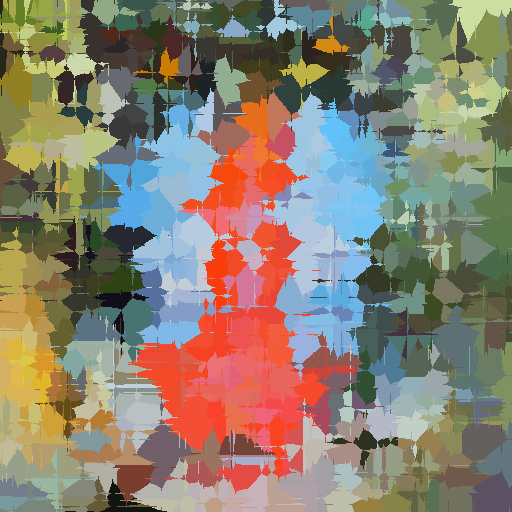
Voronoi diagram
Image effect algorithm that produces different results based on different distance metrics.
view notebook
Simulation
Physics, nonlinear systems, dynamics, chaotic stuff, natural phenomena ..
-
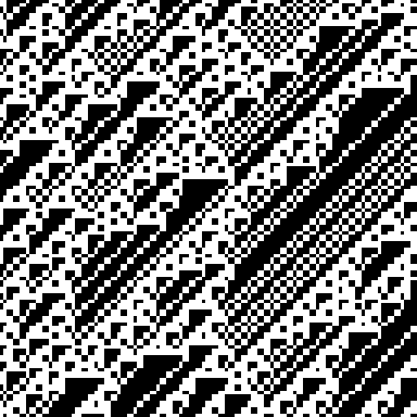
Cellular Automaton 1D
Implementation of an uni-dimensional cellular automata of binary values.
view notebook -
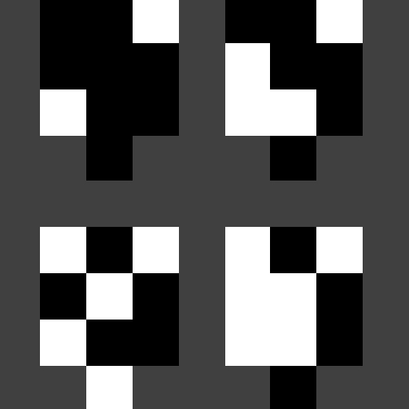
Cellular Automaton 2D
Implementation of an uni-dimensional cellular automata of binary values.
view notebook -
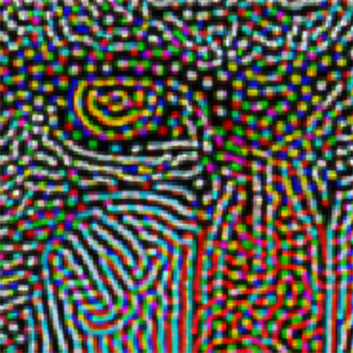
Reaction Diffusion
Implementation of a reaction-diffusion system based on Gray Scott's model.
view notebook
M.L. + A.I.
Experiments involving machine learning, artificial intelligence and so on.
-
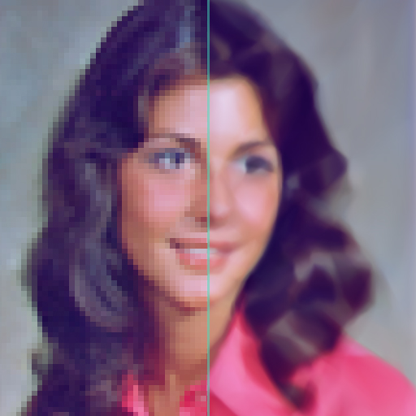
Image Approximation
Image approximation and upscaling interpolation using deep Neural Network.
view notebook
Sound Design
Algorithmic composition, audio programming, sound effects, audio synthesis ..
-
Sinusoidal periodic waveform
Overview about sinusoidal periodic waveform or sine wave function.
view notebook -
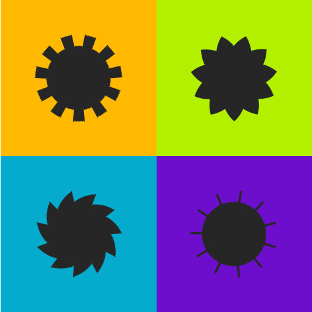
Non-sinusoidal periodic waveforms
Overview about non-sinusoidal periodic waveforms.
view notebook -

Color of noise
Overview and implementing of noise function focused on its power spectrum.
view notebook